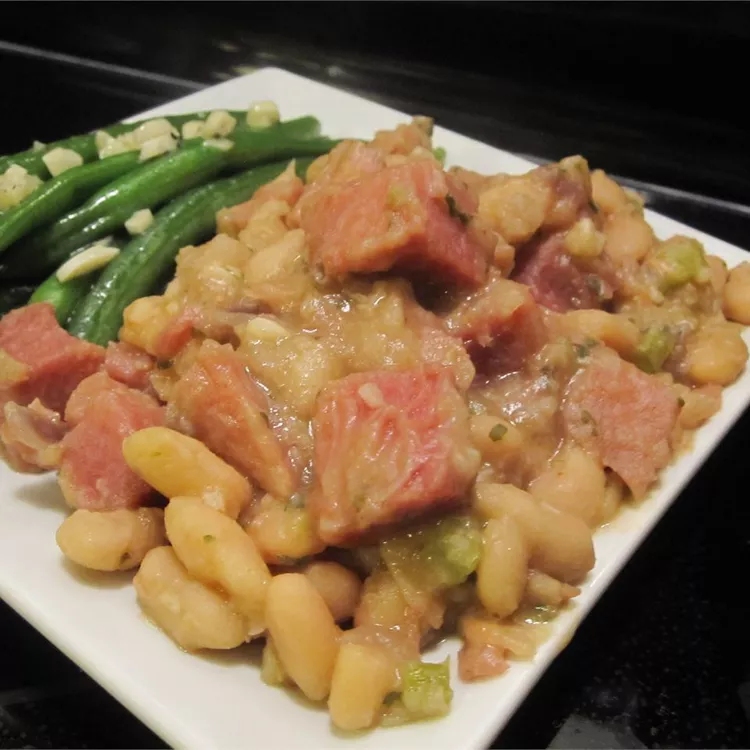

Ham and Beans

Ham and Beans
Ingredients
- 1 pound dry great Northern beans
- ½ pound cooked ham, diced
- 1 small onion, diced
- ½ cup brown sugar
- 1 tablespoon dried parsley
- ¼ teaspoon cayenne pepper
- 6 cups water, or as needed to cover
- salt and pepper to taste
Instructions
- Rinse beans; transfer to a large stockpot. Cover with cold water and let stand overnight or at least 8 hours. Drain and rinse beans.
- Return beans to stockpot; add ham, onion, sugar, parsley, and cayenne pepper. Pour in enough water to cover and season with salt and pepper. Bring to a boil; reduce heat to low and simmer until beans are tender, adding more water if needed, about 1 1/2 to 2 hours.